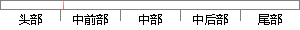

适合各大平台，在macOS、Windows OS、Linux OS等发行版的平台上均可使用。
片段位置图

相似结果|
1
原句片段：适合各大平台，在macOS、Windows OS、Linux OS等发行版的平台上均可使用。
相似片段 1：macOS 10.12 (Sierra)** OS X 10.11 (El Capitan...定期在企业和开源 Linux 发行版中运行测试。说明: ...在Windows、Mac 和 Linux 系统上均可使用。完整系...
|
※ 片段修改建议 ※
近似词参考：- 适合：合适 得当 适宜
- 均可：都可
- 可使：可以使
- 使用：利用
系统自动生成语句：合适各大平台，在macOS、Windows OS、Linux OS等发行版的平台上都可利用。
注：本片段修改建议为系统自动生成，仅供参考。